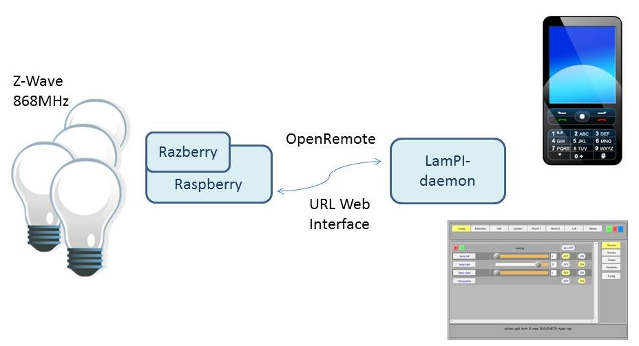

{kind=link}
{kind=link}

*** As of June 2015 all PHP files have been converted to node.js code. This page still needs to be rewritten to reflect this change.
This chapter describes some design and architecture considerations for LamPI. It is meant to provide background information on why the components and their setup are chosen the way they are, and at the same time will allow you to judge if you can live with that setup or whether you are convinced that you can do better yourself.
Please tell me if you consider certain aspects a major flaw, and I might re-design those parts. Also, if you like to participate in the project and rewrite some new parts of the code, please tell me. This chapter contains the following subjects (for easy navigation):
LamPI started as an alternative controller to the ICS-1000 controller of klikaanklikuit.nl (150 EURO), but today it offers support for other brands as well as well support for sensors and even 868MHz Z-Wave devices.
LamPI consists of a few major components as outlined in the picture below. Starting with release 1.7 all communication between the front-end and the controlling daemon takes place over websockets. The picture belo shows the most important parts of LamPI and their relations. Please taje into account that the picture showns the logical relationships, it is possible that one node combines 2 or 3 functions (for example: The Raspberry that is master node can also be its own slave with the sensors connected and it can serve the database and the webGui).
Let's explain a little bit more about the architecture. There are a few main components to be recognized that are further described in this document. These components or modules are the following:
When you have a lot of devices, or sensors around the house you might duplicate functions for more range, or duplicate to spread the load on the system more evenly. In this case the described modules can be put on separate systems. These do not have to be Raspberry systems per-se but can also be your fileserver or NAS or your router.
You have to keep in mind though that these systems have dependencies and need other packages to be available in order to work. For example the LamPI-gui probably needs apache and webserver availability including websocket support, the database function needs MySQL support and the LamPI-node.js needs a node.js system in place. Communication between modules takes place with regular sockets or websockets (with exception of the database where we use the mysql function). There are advantages and disadvantages wrt to the approach chosen for the communication between GUI frontend and LamPI-node backend.
The disadvantage is that with the old plain socket communication and supporting ajax PHP scripts such as backend_rasp.php all looked much easier and developer is in control. Only you think you are, as most of the ajax calls are asynchronous in nature, and the backend PHP scripts run only once so information that is not directly available from the LamPI-daemon will not be received and results in a time-out.
Webserver transmission is rather simple, once the socket is open you're good to go. Incoming messages are more complicated, they arrive asynchronously to the LamPI-x.y.js client and so we must make sure that these messages are delivered to the correct handler of the program. Also, it is good to define a standard message format between GUI <-> LamPI-node <-> Transmitter/Receiver/Sensors.
As good example is what we do with incoming status changes for devices in the program.
The LamPI-x.y.js file contains (most of) the front end of the LamPI application. It contains Javascript code in combination with a lot of jQuery functions that will shield the complex Ajax functions from the user and expands the code with useful widgets and buttons. The LamPI GUI system is written in Javascript, with libraries jQuery, and some functions of jQuery-Mobile and jQuery-UI.
The LamPI Javascript program with with regular browser programs in which it will make use of jQuery UI function. Alternatively, when using the mobile clients such as Android client, the program will make use of jQuery Mobile libraries that are optimized for use in mobile devices such as Android clients. Javascript is an interpreted language, so it cannot really be compiled. However, Adobe provides a "Closure Compiler Service" that will analyze your JavaScript code, remove all the comments and changes long identifier names to short ones if necessary. The result is a smaller javascript file which takes less time to interpret as well. Therefore we provide the original LamPI-x.x.js file for development and debugging and the smaller/faster LamPI-x.x.min.js file that is used by default for running LamPI.
You can start the GUI by calling one of the main .html files. By default this is the ~/www/index.html file. The index.html will setup the libraries, css file and may override some standard settings in the LamPI-x.x.min.js file (if you choose to do so). For example you can use this to make a dev.html file that uses other development libraries etc for testing, or a mobile.html file that calls LamPI-x.x.min.js with the mobile settings activated.
The startup html file calls LamPI-x.x.min.js which will perform the following initial actions:
The GUI page has the following areas (pre-) defined:
The LamPI daemon can be found in the ~ directory together with its supporting local libraries in the ~/modules directory. LamPI-node.js is written in Javascript and is started automatically with a cron script every minute. This way we know that the system will start even when it encountered a fatal error. Not that there are any known at the moment of writing, the daemon will run fine for weeks in a row, but just in case. Actually, since we use the log aging system - every night at 02:00 hrs the log files are moved to a .log.x file - the node daemon needs to be restarted so that it again writes to the new and correct ~/www/log/LamPI-daemon.log file
The LamPI-node.js is a node.js Javascript program that will accept socket connections from clients and transceivers. It will accept device commands from the front end and send back status changes of devices (for example from timers). On the "other side" it will messages from the transceiver with read sensor and handset information and may act upon those messages. LamPI-node will also initiate messages to the 433MHz devices based on either incoming commands from the client(s) or timers that expire for certain actions. The LamPI-daemon is found in the ~ directory.
Not long ago the LamPI daemon was implemented in PHP, and I was reasonable satisfied with the results. However, in April 2015 I decided to rewrite the code to node.js. If offered a set of distinct advantages:
So, after some consideration I decided that building this daemon in node.js would offer me enough functionality, allow me to put the daemon on almost any webserver without the need of a C/C++ compiler and be much more flexible when making changes.
The LamPI daemon process is implemented in the LamPI-node.js file and a few supporting modules (in directory ~/modules). The file is split in a few important parts:
Note: The run queue might also consist of more complex commands such as "All Off" in a room. If such a complex command is encountered on the Run Queue it is replaced with the individual device "OFF" commands which are then each added separately to the Run Queue instead.
Transceivers is not entirely the correct name for the programs in this section. But as seen from the LamPI daemon (see next main section) these are the functions interfacing with the physical 433MHz receiver and transmitter devices on the RaspberryPI. The daemon sees it as one connection with the Raspberry for both receiving handset/sensor information as well as sending device commands.
There are several ways to have the LamPI-node daemon talk with sensors and devices in your house. If these sensors and devices are connected to a Raspberry (Master of slave node) we talk about a direct connection. The first LamPI releases, up and to release 3.4, would only offer these connection options.
But since release 3.5 we offer an additional way of connecting transmitter, receiver and sensor devices to your Raspberry. You can make use of a gateways devices that will handle all low-level communication with your devices and sensors and provide a simple interface to your Raspberry. For LamPI we make use of an Arduino device and as a result we'll have to split part of it's definition in two ways:
In the following sections we will describe the functions in more detail.
Note: In the last revision of the LamPI software, sensors or receivers (= receivers) send messages to the LamPI-daemon and LamPI-daemon sending device commands (= transmitters) will be in separated directories.
The LamPI receiver is used to receive and recognize 440MHz pulses coming from remote sensors (such as temperature readers) and/or remote control units from klikaanklikuit or others. The way that the sniffer function works needs some explaining.
Core for this function is the handling of incoming pulses. Incoming pulses cause the pin of wiringPi library to change from low to high or vice-versa. Therefore we built an interrupt handler that is triggered by every change in the pin. As soon as an interrupt arrives, the function is executed and it does basically the following things:
The sniffer.c file contains a set of funcions that parse the incoming pulses on the receiver for existence of particular protocol messages.
Without the -d option to the commandline, the sniffer program will not be configured to interface with the various transmitters. But with the -d options specified, the sniffer executable (or if you run make install it is called ~/exe/LamPI-receiver) will act as a daemon listening to port 5000 on a socket TCP connection. It will write all received handset and sensor codes to the socket, but more importantly for this discussion, it will also listen to incoming commands over the socket and than call the corresponding transmitter program.
The message format that is exchanged between the LamPI-daemon and the LamPI-receiver process (2-way) is described in a separate document.
The transmitter function is the most straightforward function implemented. For every known and supported brand we compile and build and executable which is installed in the ~/exe directory. It is possible to call these functions from the commandline, but if we run the LamPI-receiver in daemon mode (-d option) the daemon will also provide transmitter functions (for requests coming in on sockets). The LamPI-receiver will call these command-line programs directly using the PHP system() command.
Therefore it makes sense to keep the naming of the transmitter programs standard (make no change, or if you do change the transmitter.c code as well). Also the commandline options for each of the transmitter programs are the same (makes sense too, not?). All programs must be called as follows"
> cd ~/.exe
> ./mysender -g <address> -n <unit> [-p <pin>] "on" | "off" | "dimlevel"
Of course, on and off are universal commands for both switches and dimmers, dimlevel is an interger that decibes the level (0 to 31). At the moment only supported for klikaanklikuit devices.
the following options are supported and must be present in new transmitter programs too:
The source code for the transmitter programs reside in different sub-directories of ~/receivers: Some C++ code in the "lights" directory was ported from an existing Arduino library and contains support for multiple transmitters with same prototype definitions in C++. Some other code such as for Kopou, WT440H and Livolo was developed.
Gateways are protocol converters connected to our LamPI environment. This connection can be a Wifi connection such as for Z-Wave devices but can also be an USB connect (to a raspberry) which is done for the 433MHz messages.
The Arduino Gateway is described in detail in a seperate section of the hardware guide and its message format is described in a separate page.
The Z-Wavy messaging format is described on the separate Z-Wave page. Reason is that this is not so much a programming interface but communication takes place as a URL string that is executed by "curl" in the LamPI-daemon. At the moment the communication is therefore initiated by the LamPI-daemon only.

The Z-Way software contains Javascript library functions to build actions and initiate communication from the Razberry device but this is not implemented (yet), and therefore for example administrative functions for adding Z-Wave devices must be done using the Razberry interface on that machine itself.
http://<raspberry_ip_address>:8083
Then choose the traditional blue expert interface and then "network" to setup your new Z-Wave device. The id that is given to the Z-Wave device must be used in the gateway and in the LamPI-daemon as the unit id to address the correct device. So make sure that the correct id/unit values are present in the database (or in the 'database.cfg' file when starting the daemon the first time with the script command:
cd ~/scripts; ./PI-node -i
Android code is in beta, but as you can see in the LamPI-x.y.js file, significant parts are already there and the code is usable.